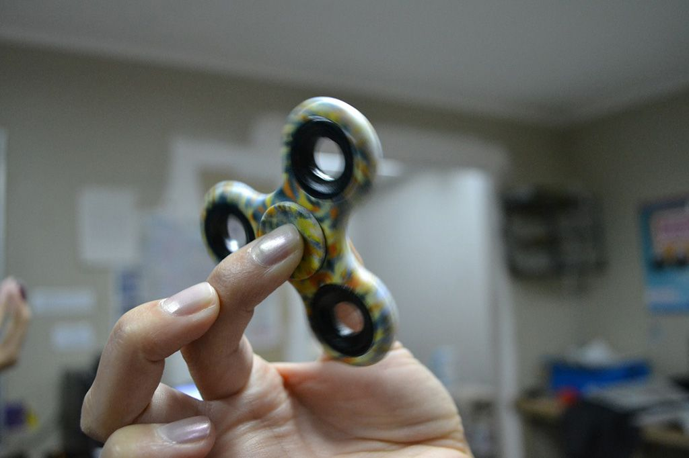

La extraña historia de los ‘fidget spinners’
Ya hemos visto que a pesar de que se promocionan como aparatos beneficiosos para
eliminar la ansiedad, actuando como un mecanismo de liberación de la energía
nerviosa, el estrés psicológico o incluso ayudar a los niños con TDAH, los ‘fidget
spinners’ no tienen efectos terapéuticos.
Sin embargo, el hype que están levantando es tal, que ya son uno de los 10 juguetes
más vendidos en Amazon. Sean buenos o no, el caso es que se han convertido en un
enómeno de masas. Un fenómeno de masas que, si se investiga, condensa unos
inicios cuanto menos imprecisos

Qué es y para qué sirve el "spinner", juguete furor
Los rumores que circulan lo catapultan como un juguete ideal para quienes padecen estrés, ansiedad
trastorno por déficit de atención e hiperactividad o depresión. Así, el popular invento arrasa en distintos
lugares del mundo y nuestra provincia no es la excepción. Los spinners llegaron hace poco y la demanda en
jugueterías es creciente
En los locales afirmaron que se venden unos 50 por día a un valor de $ 190. El público santiagueño,
especialmente el infantil, no quiere perderse la experiencia de poner a girar en sus manos este elemento que
está disponible en infinidades de colores y combinaciones con luces.
Si bien el spinner revoluciona hoy el mercado del juguete por su simplicidad, su invención tuvo lugar hace unos
20 años, de la mano de una ingeniera estadounidense. Su propósito era ayudar a niños con autismo o trastorno
por déficit de atención e hiperactividad (TDAH) con la ansiedad.